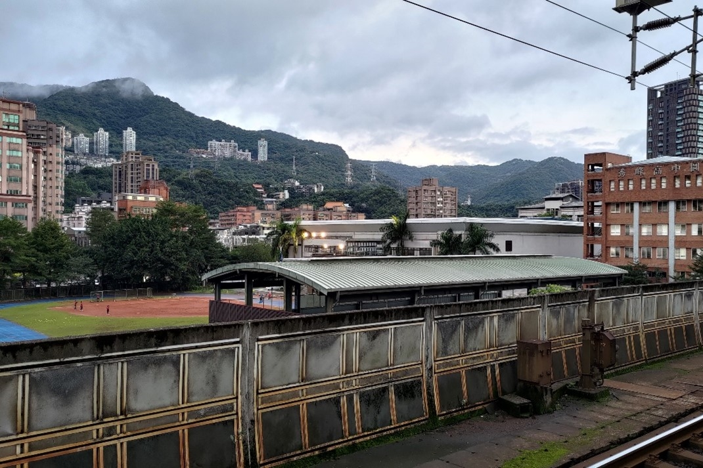
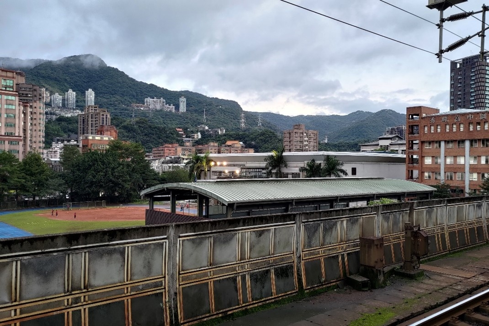

車站介紹
汐止火車站現在是台鐵的二等車站，在臺灣鐵路管理局的分級之中位於特級火車站(台北、台中、高雄、花蓮，全台灣北中南東各一而已)和28座一級火車站之下，但如果從車流量和通勤人數來看，這裡位居全台14.15位左右，超過了不少的一等站，可以說是台灣非常重要的車站之一，而這也跟汐止人天天往返北市工作上學和這裡缺乏捷運系統脫不了關係。
而缺乏捷運也讓汐止的火車以及公車變的相對重要，在狹長形狀的汐止區，三座火車站：汐科、汐止、五堵(火車通常是要去台北、基隆的人選擇)，以及公路客運、市區公車(公車通常是要去內湖的人選擇)都是汐止人重要的交通工具，雖然因為車站等級的原因汐止不停靠普悠瑪和太魯閣(汐科和五堵甚至沒有自強號)，但其實從汐止到台北也才二十多分鐘、二十塊錢的事情，在頻繁的區間車班次之間，我覺得汐止的交通不會不方便。
民眾反饋
其實在訪問的途中，我聽到了非常多民眾對於汐止火車站的負面看法。首先是關於月台，汐止火車站的月台設計是以舊稱水返腳出發，搭配二樓大廳的淺藍色玻璃做成的方舟意象，但這也導致了月台的遮雨棚為了配合設計而製作成弧形，反而失去了不少遮風擋雨的功能。
再來是大廳的休息區，坐在休息區休息的一名女士提到覺得大廳明明空間大而明亮，但座位太少，只有充電區的一排，防疫期間加上幾個間隔就快要沒位置了，但其實在我小時候大廳是充滿座椅的，剪票員說是因為太多椅子擋到動線才選擇收掉大部分椅子。而充電區其實也頗為人詬病，明明有插座和USB接頭兩個接口，但卻常常發生沒有電的情況，USB接頭也早已鬆弛，卻遲遲不見有人更換。
在車站中庭，有兩個樓梯可以向下通到汐止火車站的停車場。停車場位在高架鐵路下方，給那些開車來的人一個停車的空間，但我問了剛停好車的行人，他表示最近停車場漲價變成35塊，會增加開銷，感覺非常不便民。

 
